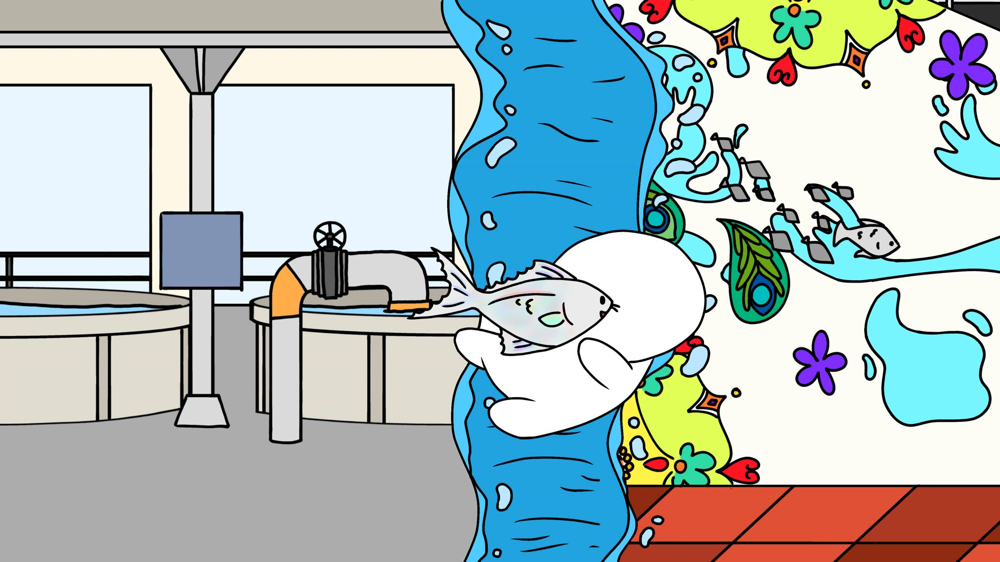
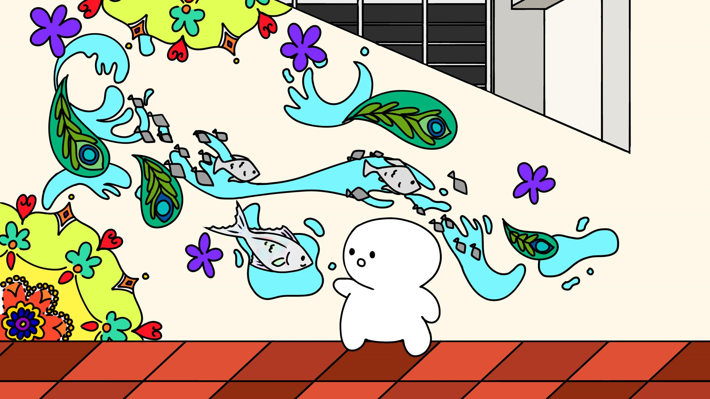
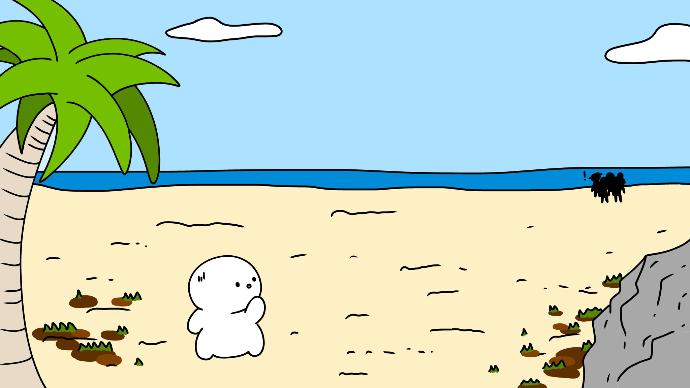
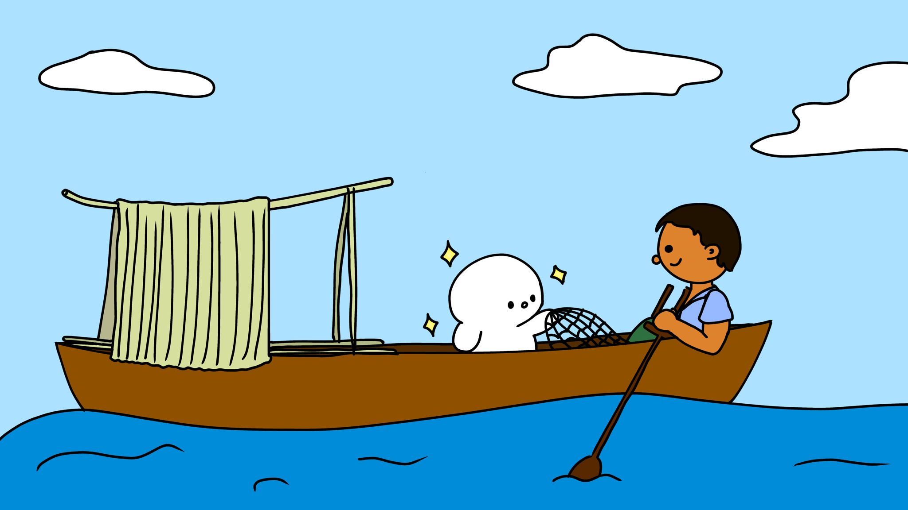
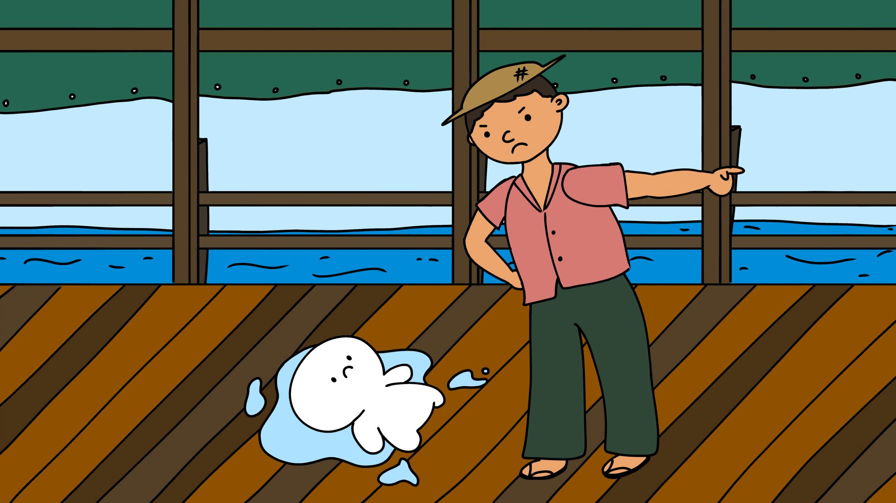
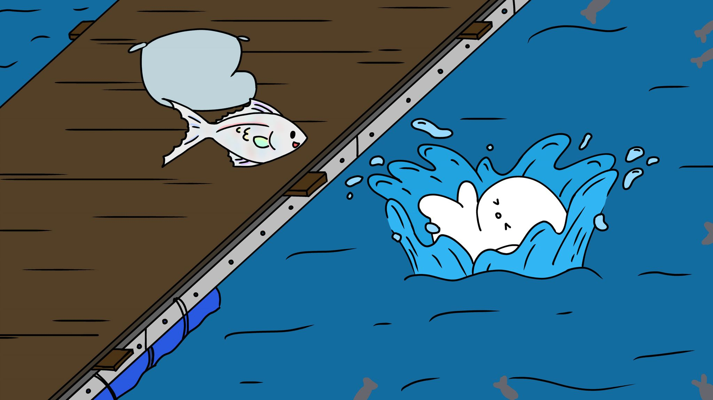
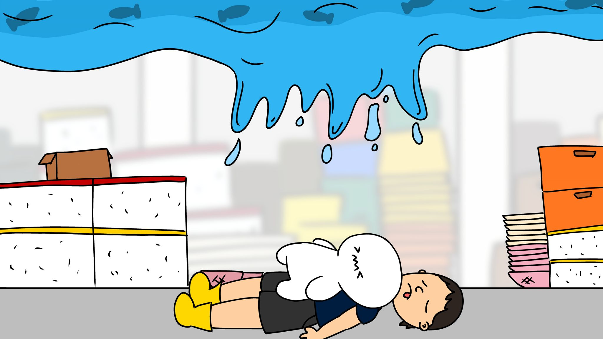
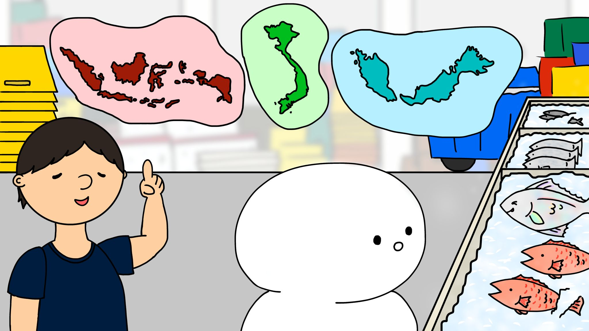

Which Local Fish Are You?

Embark on a journey through time and markets to discover your inner fishy personality!












Embark on a journey through time and markets to discover your inner fishy personality!







MBTI Type:
Fin‑tastic match:
Arch Nemo‑sis:
Compatibility is nuanced! These results are just for fun and shouldn't be taken too sea‑riously. Form connections with whoever floats your boat!